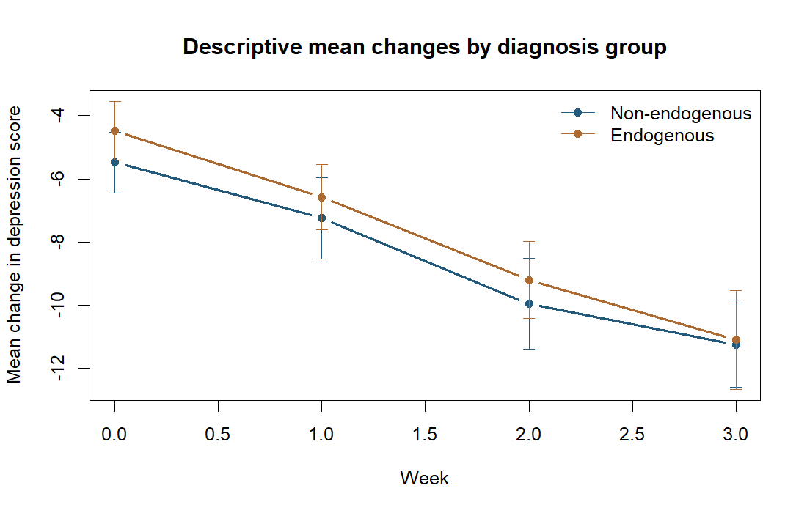

Why follow the same patients over time?
I used the riesby teaching dataset from a historical depression trial. It records change in depression scores, diagnosis group and measured plasma concentrations of imipramine and desipramine. Several observations come from the same patient, so I used models that account for that connection. Dataset documentation
What I found
Measured desipramine concentration was associated with how depression scores changed over time.
Observed patterns by diagnosis


Model-based finding
Holding diagnosis constant, a one-unit higher measured desipramine concentration was associated with a 0.887-point lower weekly slope in depression score change. The model uses repeated measures from each patient.
- Week × desipramine estimate
- −0.887
- 95% confidence interval
- −1.551 to −0.224
How I chose the model
- Explore trajectories. I plotted individual patient profiles and summarized weekly changes by diagnosis.
- Compare which variables explained the average pattern. I used maximum likelihood (ML) to compare candidate models with week, diagnosis and the measured concentrations. The week × desipramine specification had the lowest AIC and BIC among those compared, including the imipramine specification.
- Choose how to model repeated visits. I kept the fixed effects the same and used restricted maximum likelihood (REML) to compare patient-level random effects and residual covariance structures. The model with each patient's own starting level and weekly slope (random intercepts and slopes) had the lowest BIC. I used that model for the estimate above.
Diagnostics and limits
I checked residuals against fitted values and week and compared their distribution with a normal reference. The fitted association alone cannot establish a treatment effect or guide dosing. The estimate can reflect both changes within a patient and differences between patients. The sample is small, and the interval does not account for model selection. View residual diagnostics